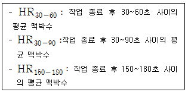
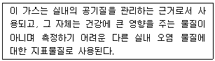
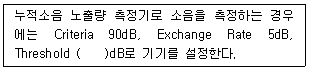
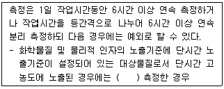
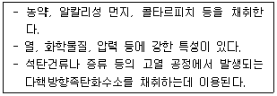
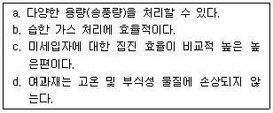
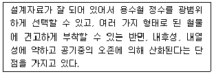
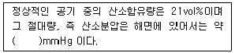
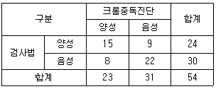
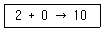

산업위생관리기사 (2012-05-20 기출문제)
1과목: 산업위생학개론
1. 다음 중 작업환경 개선을 위한 인체측정에 있어 구조적 인체 치수에 해당하지 않는 것은?
- 팔길이
- 앉은키
- 눈높이
- 악력
(정답률: 92%)

2. 작업을 마친 직후 회복기의 심박수(HR)를 다음과 같이 표현할 때 다음 중 심박수 측정 결과 심한 전신피로 상태로 볼 수 있는 것은?

- HR30-60이 110을 초과하고, HR150-180과 HR60-90의 차이가 10 미만일 때
- HR30-60이 100을 초과하고, HR150-180과 HR60-90의 차이가 20 미만일 때
- HR30-60이 80을 초과하고, HR150-180과 HR60-90의 차이가 30 미만일 때
- HR30-60이 70을 초과하고, HR150-180과 HR60-90의 차이가 40 미만일 때
(정답률: 95%)
3. 다음 중 직업성 질환의 예방에 관한 설명으로 틀린 것은?
- 직업성 질환은 전체적인 질병 이환율에 비해서는 비교적 높지만, 직업성 질환은 원인인자가 알려져 있고 유해인자에 대한 노출을 조절할 수 없으므로 안전 농도로 유지할 수 있기 때문에 예방대책을 마련할 수 있다.
- 직업성 질환의 1차 예방은 원인인자의 제거나 원인이 되는 손상을 막는 것으로, 새로운 유해인자의 통제, 알려진 유해인자의 통제, 노출관리를 통해 할 수 있다.
- 직업성 질환의 2차 예방은 근로자가 진료를 받기 전 단계인 초기에 질병을 발견하는 것으로, 질병의 선별검사, 감시, 주기적 의학적 검사, 법적인 의학적 검사를 통해 할 수 있다.
- 직업성 질환의 3차 예방은 대개 치료와 재활 과정으로, 근로자들이 더 이상 노출되지 않도록 해야하며 필요시 적절한 의학적 치료를 받아야 한다.
(정답률: 71%)
4. 다음 중 산업위생의 역사에 있어 주요 인물과 업적의 연결이 올바른 것은?
- Percivall Pott : 구리광산의 산 증기 위험성 보고
- Hippocrates : 역사상 최초의 직업병(납중독) 보고
- G. Agricola : 검댕에 의한 직업성 암의 최초 보고
- Bernardino Ramazzini : 금속 중독과 수은의 위험성 규명
(정답률: 85%)
5. 미국국립산업안전보건연구원(NIOSH)에서 제시한 직무 스트레스 모형에서 직무 스트레스 요인을 작업 요인, 환경 요인, 조직 요인으로 크게 구분할 때 다음 중 조직 요인에 해당하는 것은?
- 교대근무
- 소음 및 진동
- 관리유형
- 작업부하
(정답률: 81%)
6. 다음 중 화학물질의 노출기준에 관한 설명으로 옳은 것은?
- "Skin" 표시 물질은 점막과 눈 그리고 경피로 흡수되어 전신 영향을 일으킬 수 있는 물질을 말한다.
- 발암성 정보물질의 표기로 “2A”는 사람에게 충분한 발암성 증거가 있는 물질을 말한다.
- 발암성 정보물질의 표기로 “2B"는 시험동물에서 발암성 증거가 충분히 있는 물질을 말한다.
- 발암성 정보물질의 표기로 “1”은 사람이나 동물에서 제한된 증거가 있지만, 구분 “2”로 분류하기에는 증거가 충분하지 않은 물질을 말한다.
(정답률: 88%)
7. 다음 중 직업병 및 작업관련성 질환에 관한 설명으로 틀린 것은?
- 작업관련성 질환은 작업에 의하여 악화되거나 작업과 관련하여 높은 발병률을 보이는 질병이다.
- 직업병은 직업에 의해 발생된 질병으로서 직업적 노출과 특정 질병 간에 인과관계는 참고적으로 반영된다.
- 직업병은 일반적으로 단일요인에 의해, 작업관련성 질환은 다수의 원인 요인에 의해서 발병된다.
- 작업관련성 질환은 작업환경과 업무수행상의 요인들이 다른 위험요인과 함께 질병발생의 복합적 병인 중 한 요인으로서 기여한다
(정답률: 58%)
8. 산업안전보건법상 “충격소음작업”이라 함은 몇 dB 이상의 소음이 1일 100회 이상 발생되는 작업을 말하는가?
- 110
- 120
- 130
- 140
(정답률: 71%)
9. 상시근로자가 150명인 A 사업장에서는 연간 15건의 재해가 발생하였다. 1인당 연간근로시간이 2000시간이라 할 때 이 사업장의 도수율은 약 얼마인가?
- 10
- 20
- 30
- 50
(정답률: 82%)
10. 다음 중 산업위생의 정의에 있어 4가지 주요 활동에 해당하지 않는 것은?
- 보상(compensation)
- 인지(recognition)
- 평가(evaluation)
- 관리(control)
(정답률: 88%)
11. 다음 중 재해예방의 4원칙에 대한 설명으로 틀린 것은?
- 재해발생에는 반드시 그 원인이 있다.
- 재해가 발생하면 반드시 손실도 발생한다.
- 재해는 원칙적으로 원인만 제거되면 예방이 가능하다.
- 재해예방을 위한 가능한 안전대책은 반드시 존재한다.
(정답률: 79%)
12. 다음 중 산업위생전문가들이 지켜야 할 윤리강령에 있어 전문가로서의 책임에 해당하는 것은?
- 일반 대중에 관한 사항은 정직하게 발표한다.
- 위험요소와 예방조치에 관하여 근로자와 상담한다.
- 과학적 방법의 적용과 자료의 해석에서 객관성을 유지한다.
- 위험요일의 측정, 평가 및 관리에 있어서 외부의 압력에 굴하지 않고 중립적 태도를 취한다.
(정답률: 75%)
13. 다음 중 직업성 변이(occupational stigmata)를 가장 잘 설명한 것은?
- 직업에 따라서 체온의 변화가 일어나는 것
- 직업에 따라서 신체의 운동량에 변화가 일어나는 것
- 직업에 따라서 신체활동의 영역에 변화가 일어나는 것
- 직업에 따라서 신체형태와 기능에 국소적 변화가 일어나는 것
(정답률: 94%)
14. 다음 중 중량물 취급으로 인한 요통발생에 관여하는 요인으로 볼 수 없는 것은?
- 근로자의 육체적 조건
- 작업빈도와 대상의 무게
- 습관성 약물의 사용 유무
- 작업습관과 개인적인 생활태도
(정답률: 92%)
15. 젊은 근로자의 약한 쪽 손의 힘은 평균 50kp이고, 이 근로자가 무게 10kg인 상자를 두 손으로 들어 올릴 경우에 한 손의 작업강도(%MS)는 얼마인가? (단, 1kp는 질량 1kg을 중력의 크기로 당기는 힘을 말한다.)
- 5
- 10
- 15
- 20
(정답률: 82%)
16. 근육운동에 동원되는 주요 에너지의 생산방법 중 혐기성 대사에 사용되는 에너지원이 아닌 것은?
- 아데노신 삼인산
- 크레아틴 인산
- 지방
- 글리코겐
(정답률: 85%)
17. 다음 설명에 해당하는 가스는?

- 일산화탄소
- 황산화물
- 이산화탄소
- 질소산화물
(정답률: 73%)
18. 방직공장의 면분진 발생공정에서 측정한 공기 중 면분진 농도가 2시간은 2.5mg/m3, 3시간은 1.8mg/m3, 3시간은 2.6mg/m3일 때 해당 공정의 시간가중평균노출기준 환산값은 약 얼마인가?
- 0.86mg/m3
- 2.28mg/m3
- 2.35mg/m3
- 2.60mg/m3
(정답률: 74%)
19. 일반적으로 오차는 계통오차와 우발오차로 구분되는데 다음 중 계통오차에 관한 내용으로 틀린 것은?
- 계통오차가 작을 때는 정밀하다고 말한다.
- 크기와 부호를 추정할 수 있고 보정할 수 있다.
- 측정기 또는 분석기기의 미비로 기인되는 오차이다.
- 계통오차의 종류로는 외계오차, 기계오차, 개인오차가 있다.
(정답률: 57%)
20. 산업안전보건법상 잠함(潛艦) 또는 잠수작업 등 높은 기압에서 하는 작업에 종사하는 근로자에게는 1일 몇 시간, 1주 몇 시간을 초과하여 근로하게 하여서는 아니 되는가?
- 1일 6시간, 1주 34시간
- 1일 4시간, 1주 30시간
- 1일 8시간, 1주 36시간
- 1일 6시간. 1주 30시간
(정답률: 77%)
2과목: 작업위생측정 및 평가
21. 3000mL의 0.004M의 황산용액을 만들려고 한다. 5M 황산을 이용할 경우 몇 mL가 필요한가?
- 5.6mL
- 4.8mL
- 3.1mL
- 2.4mL
(정답률: 62%)
22. 알고 있는 공기중 농도를 만드는 방법인 Dynamic Method의 장점으로 옳지 않은 것은?
- 온습도 조정 가능함
- 소량의 누출이나 벽면에 의한 손실은 무시할 수 있음
- 다양한 실험이 가능함
- 만들기가 간단하고 경제적임
(정답률: 84%)
23. 유량 측정시간, 회수율 및 분석 등에 의한 오차가 각각 8%, 2%, 6%, 3% 일 때의 누적오차(%)는?
- 약 19.0
- 약 16.6
- 약 13.2
- 약 10.6
(정답률: 84%)
24. 직경이 5μm, 비중이 1.8인 A물질의 침강 속도(cm/min)는?
- 6.1
- 7.1
- 8.1
- 9.1
(정답률: 70%)
25. 어느 작업장에서 SO2를 측정한 결과 3ppm을 얻었다. 이를 mg/m3로 환산하면 얼마인가? (단, 원자량 S=32, 온도는 24℃, 기압은 730mm/Hg)
- 5.2mg/m3
- 6.4mg/m3
- 7.6mg/m3
- 8.2mg/m3
(정답률: 58%)
26. 코크스 제조공정에서 발생되는 코크스오븐 배출물질을 채취하려고 한다. 다음 중 가장 적합한 여과지는?
- 은막 여과지
- PVC 여과지
- 유리섬유 여과지
- PTFE 여과지
(정답률: 74%)
27. 작업환경측정시 온도 표시에 관한 설명으로 옳지 않는 것은? (단, 고시 기준)
- 열수 : 약 100℃
- 상온 : 15~25℃
- 온수 : 50~60℃
- 미온 : 30~40℃
(정답률: 75%)
28. 분석기기인 가스크로마토그래피의 검출기에 관한 설명으로 옳지 않는 것은? (단, 고시 기준)
- 검출기는 시료에 대하여 선형적으로 감응해야 한다.
- 검출기의 온도를 조절할 수 있는 가열기구 및 이를 측정할 수 있는 측정기구가 갖추어져야 한다.
- 검출기는 감도가 좋고 안정성과 재현성이 있어야 한다.
- 약 500~850℃까지 작동가능 해야 한다.
(정답률: 78%)
29. 다음은 작업장 소음측정에 관한 내용이다. ( )안에 내용으로 옳은 것은?

- 50
- 60
- 70
- 80
(정답률: 90%)
30. 원자흡광광도계의 구성요소와 역할을 기술한 것으로 옳지 않은 것은?
- 광원은 분석 물질이 반사할 수 있는 표준 파장의 빛을 방출한다.
- 원자화장치는 분석대상 원소를 자유상태로 만들어 광원에서 나온 빛의 통로에 위치시킨다.
- 단색화 장치는 특정 파장만 분리하여 검출기로 보내는 역할을 한다.
- 광원은 속빈음극램프를 주로 사용한다.
(정답률: 48%)
31. 옥내작업장의 측정한 건구온도 73℃이고 자연습구온도 65℃, 흑구온도 81℃일 때, WBGT는?
- 64.4℃
- 67.4℃
- 69.8℃
- 71.0℃
(정답률: 82%)
32. 작업환경측정치의 통계처리에 활용되는 변이계수에 관한 설명으로 옳지 않은 것은?
- 편차의 제곱 합들의 평균값으로 통계집단의 측정값들에 대한 균일성, 정밀성 정도를 표현한다.
- 측정단위와 무관하게 독립적으로 산출되며 백분율로 나타낸다.
- 단위가 서로 다른 집단이나 특성값의 상호 산포도를 비교하는데 이용될 수 있다.
- 평균값의 크기가 0에 가까울수록 변이계수의 의의는 작아진다.
(정답률: 52%)
33. 에틸렌 글리콜이 20℃, 1기압에서 증기압이 0.⑤ mmHg,라면 공기 중 포화농도(ppm)는?
- 55.4
- 65.8
- 73.2
- 82.1
(정답률: 81%)
34. 표준가스에 대한 법칙 중 [일정한 부피조건에서 압력과 온도는 비례한다]는 내용은?
- 픽스의 법칙
- 보일의 법칙
- 샤를의 법칙
- 게이-루삭의 법칙
(정답률: 76%)
35. 작업환경측정방법 중 측정시간에 관한 내용이다 ( )안에 옳은 내용은? (단, 고시 기준)

- 1회에 15분간, 1시간 이상의 등간격으로 2회 이상
- 1회에 15분간, 1시간 이상의 등간격으로 4회 이상
- 1회에 15분간, 1시간 이상의 등간격으로 6회 이상
- 1회에 15분간, 1시간 이상의 등간격으로 8회 이상
(정답률: 83%)
36. 1차, 2차 표준기구에 관한 내용으로 옳지 않는 것은?
- 1차 표준기구란 물리적 차원인 공간의 부피를 직접 측정할 수 있는 기구를 말한다.
- 1차 표준기구로 폐활량계가 사용된다.
- Wet-test미터, Rota미터, Orifice미터는 2차 표준기구이다.
- 2차 표준기구는 1차 표준기구를 보정하는 기구를 말한다.
(정답률: 81%)
37. 어느 작업장에서 Sampler를 사용하여 분진농도를 측정한 결과, Sampling 전, 후의 filter 무게가 각각 32.4mg, 63.2mg을 얻었다. 이때 pump의 유량은 20L/min 이었고 8시간 동안 시료를 채취했다면 분진의 농도는?
- 1.6mg/m3
- 3.2mg/m3
- 5.4mg/m3
- 6.9mg/m3
(정답률: 80%)
38. 고열 측정시간에 관한 기준으로 옳지 않는 것은? (단, 고시 기준)
- 흑구 및 습구흑구온도 측정시간 : 직경이 15센티미터일 경우 25분 이상
- 흑구 및 습구흑구온도 측정시간 : 직경이 7.5센티미터 또는 5센티미터일 경우 5분 이상
- 습구온도 측정시간 : 아스만통풍건습계 25분 이상
- 습구온도 측정시간 : 자연습구온도계 15분 이상
(정답률: 68%)
39. 다음이 설명하는 막여과지는?

- 섬유상 막여과지
- PVC 막여과지
- 은 막여과지
- PTEE 막여과지
(정답률: 85%)
40. [정량한계]에 관한 설명으로 옳은 것은?
- 표준편차의 3배 또는 검출한계의 5 또는 5.5배로 정의
- 표준편차의 5배 또는 검출한계의 3 또는 3.3배로 정의
- 표준편차의 3배 또는 검출한계의 10 또는 10.3배로 정의
- 표준편차의 10배 또는 검출한계의 3 또는 3.3배로 정의
(정답률: 87%)
3과목: 작업환경관리대책
41. 다음 보기에서 여과 집진장치의 장점만을 고른 것은?

- a, b
- a, c
- c, d
- b, d
(정답률: 69%)
42. 인쇄공장의 메틸에틸케톤은 3L/hr로 증발하고 있다. 이때 메틸에틸케톤에 대한 환기량의 여유계수는 5.5, 메틸에틸케톤의 분자량은 72, 비중은 0.82 이며 노출기준은 200ppm 이라면 필요 환기량은? (단, 21℃ 1기압 기준)
- 4.2m3/sec
- 5.7m3/sec
- 6.3m3/sec
- 7.4m3/sec
(정답률: 58%)
43. 송풍량이 5m3/sec, 전압이 100mmH20일 때 송풍기 소요 동력은? (단, 송충기의 효율은 70%로 한다.)
- 6.0.kW
- 6.5 kW
- 7.0 kW
- 7.5 kW
(정답률: 76%)
44. 산소가 결핍된 밀폐공간에서 작업하려고 한다. 다음 중 가장 적합한 호흡용 보호구는?
- 방진마스트
- 방독마스트
- 송기마스크
- 면체 여과식 마스크
(정답률: 86%)
45. 길이, 폭, 높이가 각각 30m, 10m, 4m인 실내공간을 1시간당 12회의 환기를 하고자 한다. 이 실내의 환기를 위한 유량(m3/min)은?
- 240
- 290
- 320
- 360
(정답률: 73%)
46. 슬롯 길이 3m, 제어속도 2m/sec인 슬롯 후드가 있다. 오염원이 2m 떨어져 있을 경우 필요 환기량(m3/min)은? (단, 공간에 설치하며 플랜지는 부착되어 있지 않음)
- 1434
- 2664
- 3734
- 4864
(정답률: 66%)
47. 유해물질을 관리하기 위해 전체 환기를 적용할 수 있는 일반적인 상활과 가장 거리가 먼 것은?
- 작업자가 근무하는 장소로부터 오염발생원이 멀리 떨어져 있는 경우
- 오염발생원의 이동성이 없는 경우
- 동일작업장에 다수의 오염발생원이 분산되어 있는 경우
- 소량의 오염물질이 일정속도로 작업장으로 배출되는 경우
(정답률: 73%)
48. 전기집진장치의 장단점과 가장 거리가 먼 것은? (단, 기타 집진기와 비교)
- 운전 및 유지비가 비싸다
- 초기 설치비가 많이 소요된다.
- 고온가스를 처리할 수 있어 보일러와 철강로 등에 설치 할 수 있다.
- 넓은 범위의 입경과 분진농도에 집진효율이 높다.
(정답률: 73%)
49. 어떤 작업장의 음압수준이 92dB이고, 근로자는 귀덮개(NRR=21)를 착용하고 있다면 실제로 근로자가 노출되는 음압수준은? (단, OSHA 계산 기준, NRR : noise reduction rating)
- 82dB
- 83dB
- 84dB
- 85dB
(정답률: 76%)
50. 후드의 정압이 50mmH2O 이고 덕트 속도압이 20mmH2O 이라면 후드의 압력손실계수는?
- 1.5
- 2.0
- 2.5
- 3.0
(정답률: 58%)
51. 메틸메타크릴레이트가 7m×14m×4m의 체적을 가진 방에 저장되어 있다. 공기를 공급하기 전에 측정한 농도는 400ppm 이었다면 이 방으로 환기량 20m3/분을 공급한 후 노출기준인 50ppm으로 달성되는 데 걸리는 시간은? (단, 메틸메타크릴레이트 발생 정지 기준)
- 27분
- 32분
- 41분
- 53분
(정답률: 72%)
52. 직경이 38cm, 유효높이 2.5m의 원통형 백 필터를 사용하여 60m3/min의 함진 가스를 처리할 때 여과 속도는?
- 25 cm/sec
- 34 cm/sec
- 43 cm/sec
- 52 cm/sec
(정답률: 65%)
53. 작업장에 퍼져있는 사염화에틸렌의 농도가 20000ppm이고 사염화에틸렌의 비중이 5.7 이라면, 오염공기의 유효 비중은?
- 1.043
- 1.063
- 1.094
- 1.123
(정답률: 82%)
54. [일정한 압력조건에서 부피와 온도는 비례한다]는 산업 환기의 기본법칙은?
- 게이-루삭의 법칙
- 라울트의 법칙
- 보일의 법칙
- 샤를의 법칙
(정답률: 65%)
55. 공학적 작업환경관리 대책과 유의점에 관한 내용으로 옳지 않는 것은?
- 물질대치 : 경우에 따라서 지금까지 알려지지 않았던 전혀 다른 장해를 줄 수 있음
- 장비대치 : 적절한 대치방법 개발이 어려움
- 환기 : 설계, 시설설치, 유지보수가 필요
- 격리 : 비용은 적게 소요되나 효과 검증 필요
(정답률: 71%)
56. 귀마개의 장단점과 가장 거리가 먼 것은?
- 제대로 착용하는데 시간이 걸린다.
- 착용여부 파악이 곤란하다.
- 보안경 사용시 차음효과가 감소한다.
- 귀마개 오염시 감염 될 가능성이 있다.
(정답률: 92%)
57. 어느 유체관의 동압(Velocity pressure)이 20mmH2O 이고 관의 직경이 25cm일 때 유량(m3/hr)은? (단, 21℃ 1기압 기준)
- 약 3000
- 약 3200
- 약 3500
- 약 3800
(정답률: 57%)
58. 한랭작업장에서 일하고 있는 근로자의 관리에 대한 내용으로 옳지 않는 것은?
- 한랭에 대한 순화는 고온순화보다 빠르다.
- 노출된 피부나 전신의 온도가 떨어지지 않도록 온도를 높이고 기류의 속도를 낮추어야 한다.
- 필요하다면 작업을 자신이 조절하게 한다.
- 외부 액체가 스며들지 않도록 방수 처리된 의복을 입는다.
(정답률: 82%)
59. 재순환 공기의 CO2 농도는 900ppm이고, 급기의 CO2농도는 700ppm 이었다. 급기(재순환공기와 외부공기가 혼합된 후의 공기) 중 외부공기의 함량은? (단, 외부공기의 CO2농도는 330ppm이다.)
- 약 35.1%
- 약 21.3%
- 약 23.8%
- 약 17.5%
(정답률: 51%)
60. 후드로부터 0.25m 떨어진 곳에 있는 금속제품의 연마 공정에서 발생되는 금속먼지를 제거하기 위해 원형루드를 설치하였다면 환기량(m3/sec)은? (단, 제어속도 5m/sec, 후드직경 0.4m)
- 2.43
- 3.75
- 4.32
- 5.14
(정답률: 72%)
4과목: 물리적유해인자관리
61. 다음 중 투과력이 가장 약한 전리방사선은?
- α선
- β선
- γ선
- X선
(정답률: 87%)
62. 70dB(A)의 소음을 발생하는 두 개의 기계가 동시에 소음을 발생시킨다면 몇 얼마 정도가 되겠는가?
- 73dB(A)
- 76dB(A)
- 80dB(A)
- 140dB(A)
(정답률: 81%)
63. 다음 중 고열의 대책으로 가장 적절하지 않은 것은?
- 방열 실시
- 전체환기 실시
- 복사열 차단
- 대류의 감소
(정답률: 73%)
64. 가로 10m, 세로 7m, 높이 4m인 작업장의 흡음율이 바닥은 0.1, 천정은 0.2, 벽은 0.15 이다 이 방의 평균 흡음율은 얼마인가?
- 0.10
- 0.15
- 0.20
- 0.25
(정답률: 72%)
65. 다음 중 감압환경의 영향에 관한 설명과 가장 거리가 먼 것은?
- 감압속도가 너무 빠르면 폐포가 파열되고 흉부조직 내로 탈출할 질소가스 때문에 증격기종, 기흉, 공기 전색을 일으킬 수 있다.
- 감압에 따라 조직에 용해되었던 질소의 기포 형성량은 연령, 기온, 운동, 공포감, 음주 등으로 인하여 조직 내 용해된 가스량 차이에 의해 달라진다.
- 동통성 관절장해는 감압증에서 보는 흔한 증상이다.
- 동통성 관절장해의 발증에 대한 감수성은 연령, 비만, 폐손상, 심장장해, 일시적 건강장해, 소인(발생소질)에 따라 달라진다.
(정답률: 42%)
66. 다음 중 저온환경에서 나타나는 생리적 반응으로 틀린 것은?
- 호흡의 증가
- 피부혈관의 수축
- 화학적 대사작용의 증가
- 근육긴장의 증가와 떨림
(정답률: 72%)
67. 다음 중 태양으로부터 방출되는 복사 에너지의 52% 정도를 차지하고 피부조직 온도를 상승시켜 충혈, 혈관확장, 각막손상, 두부장해를 일으키는 유해광선은?
- 자외선
- 가시광선
- 적외선
- 마이크로파
(정답률: 61%)
68. 다음 설명에 해당하는 진동방진재료는?

- 금속스프링
- 코르크
- 방진고무
- 공기스프링
(정답률: 71%)
69. 다음 중 조명시의 고려사항으로 광원으로부터의 직접적인 눈부심을 없애기 위한 방법으로 적당하지 않는 것은?
- 광원 또는 전등의 휘도를 줄인다.
- 광원을 시선에서 멀리 위치시킨다.
- 광원 주위를 어둡게 하여 광도비를 높인다.
- 눈이 부신 물체와 시선과의 각을 크게 한다.
(정답률: 87%)
70. 각막염, 결막염 등은 아크용접 작업시 발생하는 어떠한 유해광선에 의한 것인가?
- 가시광선
- 자외선
- 적외선
- X선
(정답률: 68%)
71. 다음 중 소음의 강도가 같은 경우 청력손실에 가장 큰 영향을 미치는 주파수의 범위는?
- 37.5~125Hz
- 125~500Hz
- 3000~4000Hz
- 8000~16000Hz
(정답률: 90%)
72. 다음 중 화학적 질실제로 산소결핍장소에서 보건학적 의의가 가장 큰 것은?
- NO2
- SO2
- CO
- CO2
(정답률: 68%)
73. 인체와 환경사이의 열평형에 의하여 인체는 적절한 체온을 유지하려고 노력하는데 기본적인 열평형 방정식에 있어 신체 열용량의 변화가 0보다 크면 생산된 열이 축적되게 되고 체온조절중추인 시상하부에서 혈액온도를 감지하거나 신경망을 통하여 정보를 받아 들여 체온 방산작용이 활발히 시작된다. 다음 중 이러한 것을 무엇이라고 하는가?
- 물리적 조절작용(physical thermo thermo regulation)
- 화학적 조절작용(chemical thermo thermo regulation)
- 정신적 조절작용(spiritual thermo thermo regulation)
- 생물학적 조절작용(biological thermo thermo regulation)
(정답률: 75%)
74. 다음 중 빛과 밝기의 단위에 관한 설명으로 틀린 것은?
- 광도의 단위로는 칸델라(candela)를 사용한다.
- 루멘(Lumen)은 1촉광의 광원으로부터 단위 입체각으로 나가는 광속의 단위이다.
- 조도는 어떤 면에 들어오는 광속의 양에 비례하고 입사면의 단면적에 반비례한다.
- 광원으로부터 나오는 빛의 세기를 광속이라 한다.
(정답률: 61%)
75. 다음 중 ( )안에 들어갈 가장 적당한 값은?

- 160
- 210
- 230
- 380
(정답률: 79%)
76. 다음 중 소음에 관한 설명으로 옳은 것은?
- 소음과 소음이 아닌 것은 소음계를 사용하면 구분할 수 있다.
- 작업환경에서 노출되는 소음은 크게 연속음, 단속음, 충격음 및 폭발음으로 구분할 수 있다.
- 소음의 원래의 정의는 매우 크고 자극적인 음을 일컫는다.
- 소음으로 인한 피해는 정신적, 심리적인 것이며 신체에 직접적인 피해를 주는 것은 아니다.
(정답률: 73%)
77. 다음 중 전리방사선의 단위에 관한 설명으로 틀린 것은?
- Roentgen(R) - 공기 중에 방사선에 의해 생성되는 이온의 양으로 주로 X선 및 감마선의 조사량을 표시할 때 쓰인다.
- rad - 조사량과 관계없이 인체조직에 흡수된 량을 말한다.
- rem - 1 rad의 X선 혹은 감마선이 인체조직에 흡수된 량을 말한다.
- Gurie - 1초 동안에 3.7×1010개의 원자붕괴가 일어나는 방사능 물질의 양을 말한다.
(정답률: 53%)
78. 충격소음을 제외한 연속소음에 대한 국내의 노출기준에 있어서 몇 dB(A)를 초과하는 소음 수준에 노출되어서는 안되는가?
- 85
- 90
- 100
- 115
(정답률: 61%)
79. 다음 중 고압환경의 인체작용에 있어 2차적인 가압현상에 대한 내용이 아닌 것은?
- 4기압 이상에서 공기 중의 질소가스는 마취작용을 나타낸다.
- 흉곽이 잔기량보다 적은 용량까지 압축되면 폐압박 현상이 나타난다.
- 산소의 분압이 2기압을 넘으면 산소중독증세가 나타난다.
- 이산화탄소는 산소의 독성과 질소의 마취작용을 증강시킨다.
(정답률: 65%)
80. 다음 중 진동에 의한 생체 반응에 관여하는 인자와 가장 거리가 먼 것은?
- 진동의 강도
- 노출시간
- 진동방향
- 인체의 체표면적
(정답률: 66%)
5과목: 산업독성학
81. 다음 중 카드뮴에 노출되었을 때 체내의 주요 축적 기관으로만 나열한 것은?
- 간, 신장
- 심장, 뇌
- 뼈, 근육
- 혈액, 모발
(정답률: 83%)
82. 다음 중 크롬(Cr)의 특성에 관한 설명으로 옳은 것은?
- 6가 크롬은 피부흡수가 어려우나 3가 크롬은 쉽게 피부를 통과한다.
- 6가 크롬은 세포막 통과가 어렵지만 3가 크롬은 세포 통과가 용이하여 산업장 노출의 관점에서 6가 크롬이 더 해롭다.
- 세포막을 통과한 3가 크롬은 세포내에서 수분에서 수 시간만에 발암성을 가진 6가 형태로 환원된다.
- 3가 크롬은 세포내에서 핵산, nuclear enzyme, necleotide와 같은 세포핵과 결합될 때 발암성을 나타낸다.
(정답률: 40%)
83. 다음 중 유해물질과 생물학적 노출지표의 물질이 잘못 연결된 것은?(오류 신고가 접수된 문제입니다. 반드시 정답과 해설을 확인하시기 바랍니다.)
- 납 - 소변 중 납
- 페놀 - 소변 중 총 페놀
- 크실렌 - 소변 중 메틸마뇨산
- 일산화탄소 - 소변 중 carboxyhemoglobin
(정답률: 66%)
84. 다음 중 유해물질에 관한 설명으로 틀린 것은?
- 단순 질식성 물질이란 그 자체의 독성은 약하나 공기중에 많이 존재하면 산소분압을 저하시켜 조직에 필요한 산소공급의 부족을 초래하는 물질을 말한다.
- 화학성 질식성 물질이란 혈액중의 혈색소와 결합하여 산소운반능력을 방해하여 질식시키는 물질을 말한다.
- 중추신경계 독성물질이란 뇌, 척수에 작용하여 마취작용, 신경염, 정신장해 등을 일으킨다.
- 혈액의 독성물질이란 임파액과 호르몬의 생산이나 그 정상 활동을 방해하는 것을 말한다.
(정답률: 72%)
85. 다음 중 작업장 유해인자의 위해도 평가를 위해 고려하여야 할 요인과 가장 거리가 먼 것은?
- 시간적 빈도와 기간
- 공간적 분포
- 평가의 합리성
- 조직적 특성
(정답률: 71%)
86. 다음중 화학물질의 독성시험을 수행할 때 고려해야 할 사랑과 가장 거리가 먼 것은?
- 실험동물(생물체)의 선정
- 시험대상 독성 물질의 선정
- 독성시험시설의 배수성 여부
- 모니터하거나 측정할 최종점(end point)선정
(정답률: 60%)
87. [표]와 같은 크롬중독을 스크린하는 검사법을 개발하였다면 이 검사법의 특이도는 약 얼마인가?

- 65%
- 71%
- 74%
- 78%
(정답률: 72%)
88. 다음 중 석면 및 내화성 세라믹 섬유의 노출기준 표시 단위로 옳은 것은?
- ppm
- 개/cm3
- %
- mg/m3
(정답률: 90%)
89. 다음 중 지방질을 지방산과 글리세린으로 가수 분해하는 물질은?
- 리파아제(lipase)
- 말토오스(maltose)
- 트립신(trypsin)
- 판크레오지민(pancreozymin)
(정답률: 74%)
90. 다음 중 유기용제의 화학적인 성상에 따른 유기용제의 구분으로 볼 수 없는 것은?
- 지방족 탄화수소
- 신나류
- 글리콜류
- 케톤류
(정답률: 78%)
91. 다음 중 납이 인체 내로 흡수됨으로써 초래되는 현상이 아닌 것은?
- 혈청 내 철 감소
- 혈색소량 저하
- 망상적혈구수의 증가
- 요중 코프로폴피린 증가
(정답률: 72%)
92. 다음 중 신장을 통한 배설과정에 대한 설명으로 틀린 것은?
- 신장을 통한 배설은 사구체 여과, 세뇨관 재흡수, 그리고 세뇨관 분비에 의해 제거된다.
- 사구체를 통한 여과는 심장의 박동으로 생성되는 혈압등의 정수압(hydrostatic pressure)의 차이에 의하여 일어난다.
- 세뇨관 내의 물질은 재흡수에 의해 혈중으로 돌아갈 수 있으나. 아미노산 및 독성물질은 재흡수되지 않는다.
- 세뇨관을 통한 분비는 선택적으로 작용하며 능동 및 수동수송 방식으로 이루어진다.
(정답률: 75%)
93. 작업장의 공기 중 허용농도에 의존하는 것 이외에 근로자의 노출상태를 측정하는 방법으로 근로자들의 조직과 체액 또는 호기를 검사해서 건강장애를 일으키는 일이 없이 노출될 수 있는 양을 규정한 것은?
- BEI
- LD
- SHD
- STEL
(정답률: 80%)
94. 다음 중 화학물질의 노출로 인해 색소 증가의 원인 물질이 아닌 것은?
- 콜타르
- 햇빛
- 화상
- 만성피부염
(정답률: 64%)
95. 다음 중 망강에 관한 설명으로 틀린 것은?
- 만성중독은 3가 이상의 망간화합물에 의해서 주로 발생한다.
- 전기용접봉 제조업, 도자기 제조업에서 발생된다.
- 언어장애, 균형감각상실 등의 증세를 보인다.
- 호흡기 노출이 주 경로이다.
(정답률: 63%)
96. 다음 중 소화기로 흡수된 유해물질을 해독하는 인체 기관은?
- 신장
- 간
- 담낭
- 위장
(정답률: 70%)
97. 다음 중 석면 발생예방 대책으로 적절하지 않은 것은?
- 석면 등을 사용하는 작업은 가능한 한 습식으로 하도록 한다.
- 석면을 사용하는 작업장이나 공정 등은 격리시켜 근로자의 노출을 막는다.
- 근로자가 상시 접근할 필요가 없는 석면취급설비는 밀폐식에 넣어 양압을 유지한다.
- 공정상 기기의 밀폐가 곤란한 경우, 적절한 형식과 기능을 갖춘 국소배기장치를 설치한다.
(정답률: 75%)
98. 폐의 미세기관지나 폐포에서는 분진의 운동속도가 낮아 기관지 침착기전 중 중력침강이나 확산이 중요한 역할을 한다. 침강속도가 얼마 이하인 경우 중력침강보다 확산에 의한 침착이 더 중요한 역할을 하는가?
- 1cm/s
- 0.1cm/s
- 0.01cm/s
- 0.001cm/s
(정답률: 38%)
99. 상대적 독성(수치는 독성의 크기)이 다음과 같은 형태로 나타나는 화학적 상호작용을 무엇이라 하는가?

- 상가작용(additive)
- 가승작용(potentiation)
- 상쇄작용(antagonism)
- 상승작용(synergistic)
(정답률: 64%)
100. 다음 중 환경호르몬에 관한 성명으로 틀린 것은?
- 내분비계 교환물질이라고 한다.
- 플라스틱(합성화학물질)에 잔류된 화학물질이 사용중에 인체에 미량 흡수되어 영향을 미친다.
- 호르몬의 생성, 분비, 이동 등에 혼란을 준다.
- 환경호르몬의 노출로 인한 가장 큰 건강상의 장해는 면역체계의 이상이다.
(정답률: 63%)